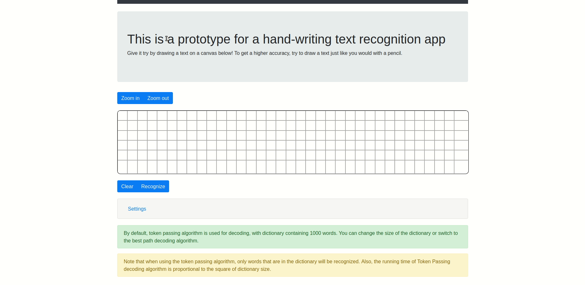

My name is Eugene Dolotow. I am an aspiring web developer living in Russia. I finished Siberian State Industrial University in 2013 with a master's degree in
Metallurgy. Since that time I've learned many programming languages and technologies as well as different programming paradigms such as object-oriented programming and
a bit of functional programming.
In the course of last few years I introduced myself to unit-testing, design patterns, algorithms and data structures. I acquired an experience and understanding of how to
write safe multi-threaded code. I familiarized myself with several programming methodologies such as DRY, KISS and TDD. In particular, I am trying to follow TDD methodology when working on something of critical importance. And I have experience using Git for version control.
My journey into the world of programming started with Delphi. Then I gradually migrated to C and C++ where I became fully commited to programming for the first time. Back then I was fascinated by different compression algorithms and file formats and used to reinvent the wheel a lot by writing image readers, pdf parsers and other stuff. A year after that I had a firm grasp of C++ and object-oriented programming. Then I moved to Java, and later to Python.
As of right now, I am mostly focused on web development. Specifically, I am learning Python Django and using it in a couple of side projects. I also know well HTML, CSS, SASS/SCSS and familiar with JQuery and Bootstrap. I know how to make beautiful responsive web pages that look good on both large and small screens. In the near future I am going to keep improving my fluency in Python/Django as well as learning other technologies and frameworks. My final goal is to become full-stack developer.
One of other areas of my interest is machine learning. I have been fascinated by it for a long time since the moment when I familiarized myself with artificial neural networks. Since that time I have got an experience of writing my own implementation of different algorithms and machine learning systems such as SVMs, convolutional neural networks, stacked autoencoders, k-means clustering algorithm.
I am also a huge fan of massive online open courses. Over the last two years I have finished more than a dozen of MOOCs on Coursera and Edx. I am constantly trying to improve myself, close knowledge gaps that I might have and stay sharp.
On-line handwritten text recognition app

The app contains a canvas element where a user can draw/write some text, a panel for showing the output and additional UI elements.
The algorithm works as follows.
When a user writes something, their handwriting gets represented as a list of vectors. Each such vector contains x and y coordinates of each point plus an additional time component and an end-of-stroke flag. These vectors are transformed and normalized. The neural net takes this sequence of vectors and outputs a list of probability distributions over character classes. Then, a decoding algorithm turns the latter into the list of class labels. Finally, the algorithm maps each class label to a character using a lookup table to give the actual transcription text.
There are 2 decoding algorithms: best path decoding and token passing. For the token passing algorithm, there are 4 different (English) language models with different sizes.
The app uses a bidirectional LSTM with 1 hidden layer comprising 100 units and a soft-max layer containing 100 output units.
The neural net was trained on the IAM On-Line Handwriting Database (IAM-OnDB) using CTC objective function
App link
Recognizing hand-written mathematical expressions
In this project, I have created a GUI app that asks users
to draw a mathematical expression and outputs a
corresponding TeX markup. The app consists of 2 main
components: the object detection pipeline and custom
logic layer.
Object detection pipeline consists of a classifier
implemented as a convolutional neural network and
an algorithm responsible for characters localization.
The logic layer takes the bounding boxes produced by
object detection pipeline and builds final TeX markup.
The classifier network was trained on 2 datasets
merged into one. One of these datasets is MNIST dataset
containing images of hand-written digits. The other
dataset containing math symbols was taken from Kaggle.
Github repository
Convolutional sliding window for MNIST digits detection
After finishing this project I learned how to apply
convolutional neural nets to the problem of object
detection. In particular, I learned how to build
and train convolutional neural networks in Keras,
how to perform convolutional sliding window for
object detection and how to use it to draw bounding
boxes around objects. Additionally, I learned how to
implement Non-Max Suppression algorithm to increase
the robustness of object detection pipeline.
For demonstration purposes, I have written a script
that generates small images with MNIST digits in
random positions. The image is fed into an object
detection pipeline to draw bounding boxes.
A Python library implementing feed-forward neural networks
In this project, I have implemented a feed-forward neural
network almost from scratch in Python. The core of the
library is written using Numpy.
When writing the library I followed TDD paradigm. I
tried to keep code as clean and well designed as
possible.
Among the things that are implemented are forward
propagation, backward propagation, gradient descent,
loss functions (Quadratic and Cross-entropy losses),
activation functions (RELU, Sigmoid, Soft-max),
regularization (weight decay), saving and restoring
the model to/from a file.
The repository provides additional scripts demonstrating the library at work.
Github repository